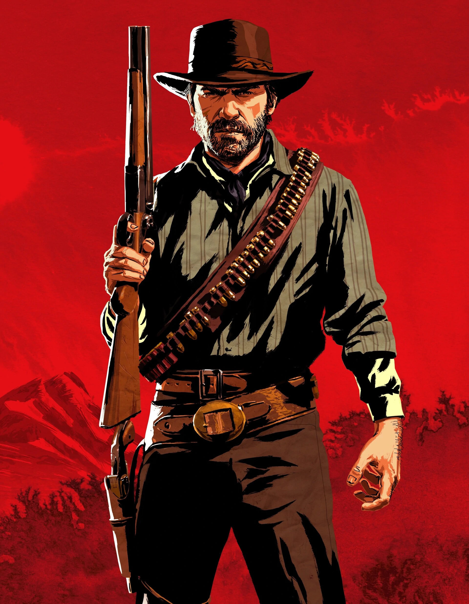

Arthur Morgan nasceu em 1874 em New Hanover e foi criado na gangue de Dutch van der Linde, que o tratou como uma figura paternal. Desde jovem, Arthur foi moldado pela violência e pela vida no crime, mas ao longo do tempo desenvolveu uma reflexão sobre suas escolhas e sua moralidade. Inicialmente leal a Dutch, Arthur começa a questionar suas ações à medida que percebe a corrupção do líder da gangue. Com o passar dos eventos, Arthur busca redenção, especialmente ao se aproximar de John Marston, tentando garantir um futuro melhor para ele e sua família. Quando descobre que está doente de tuberculose, ele enfrenta a realidade de que não pode escapar de seu passado. Na parte final de sua jornada, Arthur se sacrifica para ajudar os outros a escapar, especialmente John, e morre tentando fazer o que é certo. Sua história é de uma luta interna por redenção, culminando em sua morte, onde ele finalmente encontra a paz ao entender que ainda podia fazer algo bom pelos outros.